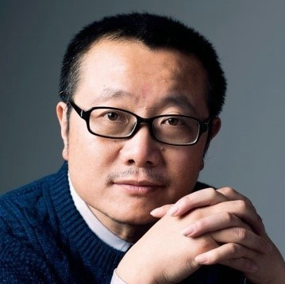

Dark Matter
Author: Blake Crouch
Originally Published: 2016
In this world he's woken up to, Jason's life is not the one he knows. His wife is not his wife. His son was never born. And Jason is not an ordinary college physics professor, but a celebrated genius who has achieved something remarkable. Something impossible. Is it this world or the other that's the dream? And even if the home he remembers is real, how can Jason possibly make it back to the family he loves? The answers lie in a journey more wondrous and horrifying than anything he could've imagined - one that will force him to confront the darkest parts of himself even as he battles a terrifying, seemingly unbeatable foe.

The Three-Body Problem
Author: Cixin Liu
Originally Published: 2008
Set against the backdrop of China's Cultural Revolution, a secret military project sends signals into space to establish contact with aliens. An alien civilization on the brink of destruction captures the signal and plans to invade Earth. Meanwhile, on Earth, different camps start forming, planning to either welcome the superior beings and help them take over a world seen as corrupt, or to fight against the invasion. The result is a science fiction masterpiece of enormous scope and vision.

What I have seen
Author: Jing Chai
Originally Published: 2012
What I Have Seen is an autobiography of Chai Jing, a well-known reporter and host, telling about her 10-year experiences at CCTV. The book is Chai Jin's confession for her growth. It can also be regarded, to a certain extent, as a memorandum of the changes of Chinese society in the past ten years. Ten years ago, Chai suffers setback due to lack of experiences after she was selected and became a news anchor at the national television. She became a field reporter during the period of SARS. The cut skin feeling brought by the reality of life, contributes to her breaking away from the superficial and self-oriented restrictions. She obtains a more broad and deep understanding of life and humanity.
Stories of the Sahara

Author: San Mao
Originally Published: 1976
Stories of the Sahara is an autobiographical account of the life and love of the Taiwanese author Sanmao while she was living in the Sahara Desert with her Spanish husband Jose Maria Quero y Ruiz. Stories of the Sahara is a breathtaking exploration of the adventures―and misadventures―of untamable wanderlust. Sanmao illuminates the joys of fearless independence and the pains of yearning for elsewhere, culminating in a stunning mosaic of love and loneliness in a deeply human search for meaning and contentment.
Fun News
Sci-fi fans will be thrilled to learn that Netflix has officially greenlit production on The Three-Body Problem.
According to reports, the new sci-fi drama, which is set to be released on Netflix late next 2022, was created by writers from two HBO legendary shows, True Blood (Alexander Woo) and Game of Thrones (David Benioff and Dan Weiss).

Netflix’s 3 Body Problem, a series adaptation of Liu Cixin’s sci-fi trilogy, has set a cast of 12 actors including Benedict Wong (Dr. Strange in the Multiverse of Madness), Tsai Chin (Shang-Chi and the Legend of the Ten Rings), and Game of Thrones alums John Bradley and Liam Cunningham. The series hails from Game of Thrones‘ David Benioff and D.B. Weiss, who serve as showrunners and executive producers under their overall deal with Netflix. Alexander Woo co-created the series with the GoT duo and will serve as executive producer and writer under his deal with Netflix.